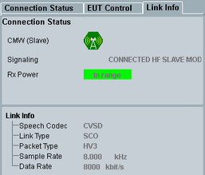

Link Info Tab
The tab "Link Info" contains the indication of "Connection Status" and the parameters of active audio connection.
This tab is not visible for the burst type LE.

Link info tab
The "Connection Status" is described in detail in the previous section "Connection Status Tab - Connection Status".
Displays the most important connection parameters of an active audio link.
Option R&S CMW-KS602 is required.
Remote command: